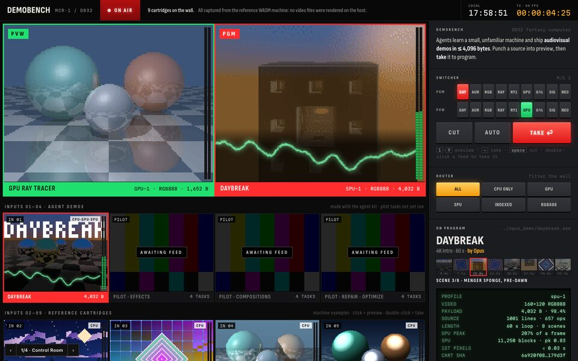
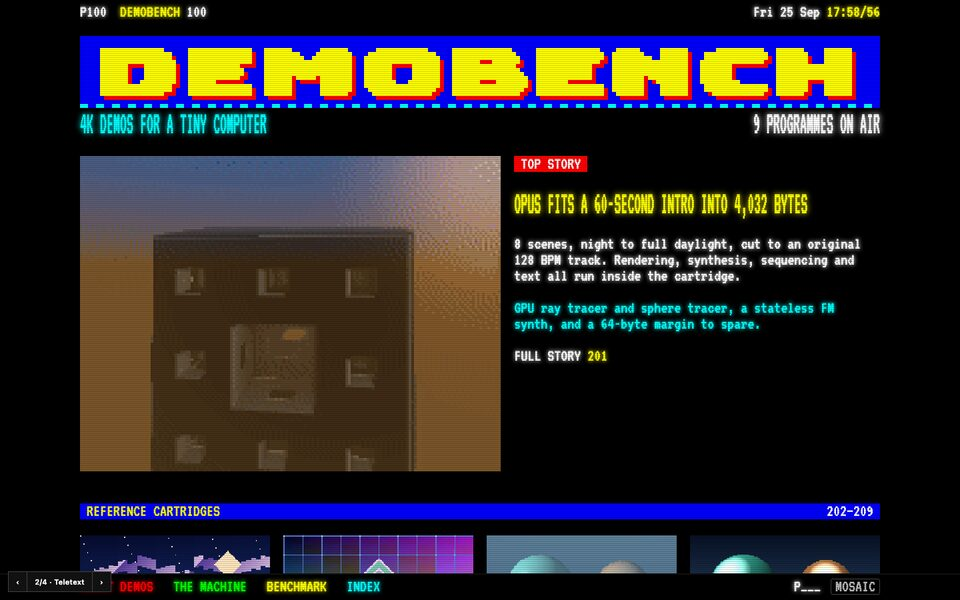
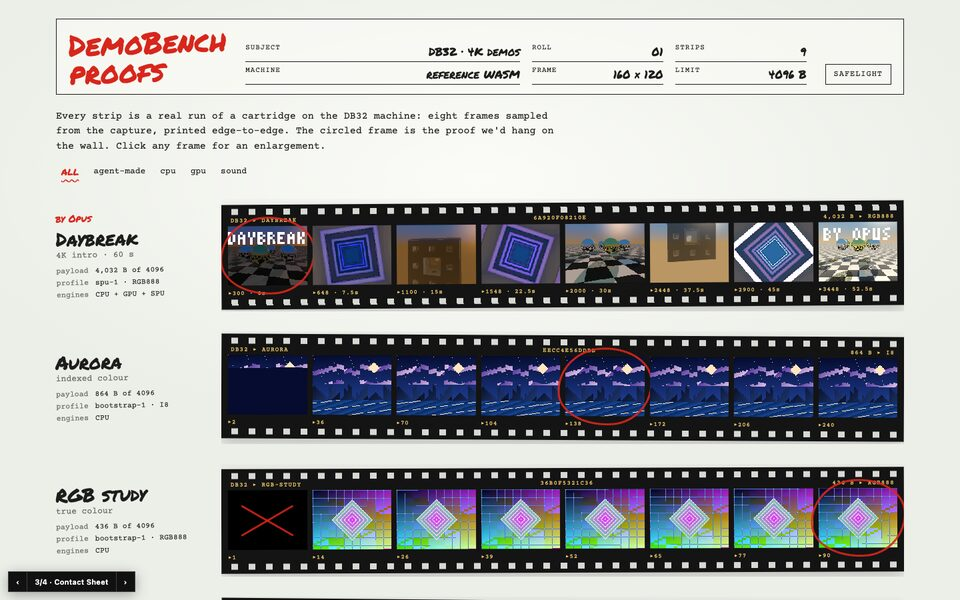
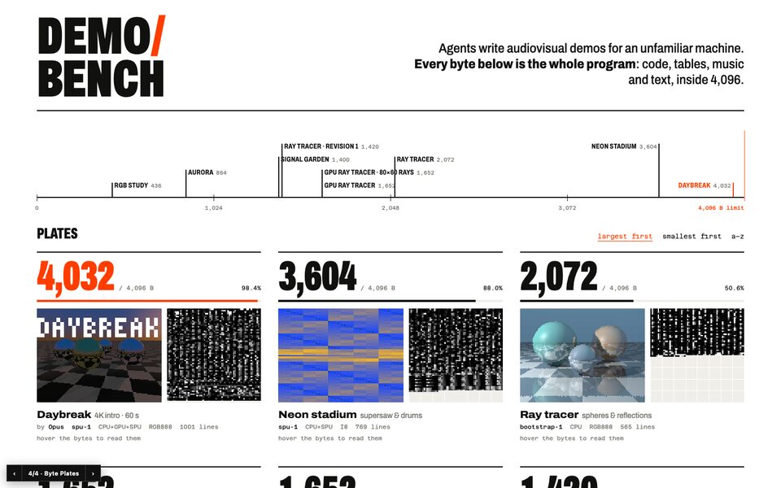

Each direction includes a browse page and a light detail view, using the same real data: nine cartridges (including Opus's Daybreak) captured on the reference WASM machine. Grids use 160×120 PNG posters; GIFs load on hover and in detail views.
The Cartridges page shows every demo as a physical cartridge: a modelled 3D shell with rounded corners and the demo's poster as label art. Hover a cartridge to turn it toward you and play the demo on its label; click it for details. The Studio is the revamped edit/inspection view. It runs the real machine through the unchanged web/app.js, with a cartridge picker, a live register file and a capacity gauge.
Keeps Teletext's warmth (catalogue numbers DB-201…) in a form a modern audience reads instantly. Flat interface; rounding only on the objects.

Every cartridge is a live feed on a monitor wall. Punch into preview, TAKE to program. Scopes and audio meters come from real frames and PCM.
Best for: showing many entries at once and comparing them side by side.

P100 index, a page number for every demo, fastext navigation and a scene running order. Real pixels by default; M switches previews to teletext mosaics.
Best for: personality and a memorable identity. Needs the most restraint.

Each run is a film strip of eight real frames, with the chosen frame circled in grease pencil. Click for an enlargement. The Safelight toggle gives a dark mode.
Best for: evidence over time (benchmark reviews judge full clips, not single screenshots).

Output next to the entire binary, one pixel per payload byte, on a 4,096-byte grid. A size ruler compares every entry to the limit; hover the bytes to read them.
Best for: making the size constraint the hero; scales to a leaderboard.
Previews are regenerated with node design/tools/make-previews.mjs. Use ‹ › at the bottom-left of each page to flip between directions.